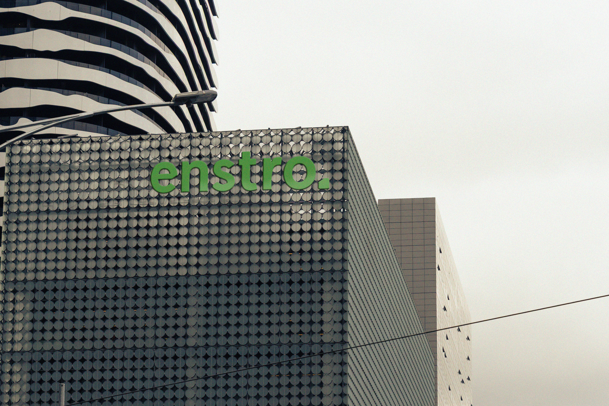

Enstro is a professional services consultancy that bridges the gap between strategy and implementation for digital and physical infrastructure projects. They combine strategic planning with hands-on implementation. While traditional consultancies deliver reports and walk away, they stay to execute.
Brief.
The goal of this project was to design a logo and logomark for Enstro that separates itself from traditional I.T consultant agencies, that feels softer and more approachable, signifying partnerships and collaboration while maintaining professionalism and legibility with subtle references to the technical infrastructure.
Response.
To create an approachable identity for the brand, a grotesque typeface with soft, rounded corners was sought to create a gentle approach that maintains its professionalism and legibility but still feels soft and approachable. Lower-case lettering was chosen to aid in its approachable communication.
Inspired by the traces on a circuit board, the ‘e’ has been modified to create a distinct typeface that adds a visual point of interest in the typeface, while creating a distinct logo mark for the company, which brings a subtle reference to the industry.
Three custom colours in both a light and dark variant were developed for the brand, inspired by earthy elements. This palette brings forth a more natural tone to the brand that separates itself from cold corporate blues and communicates a more people-focused company rather than just focusing on the technical aspect of the industry.
Services.
Brand Identity
Logo Design